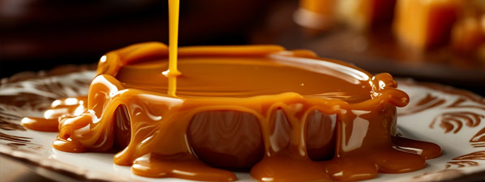
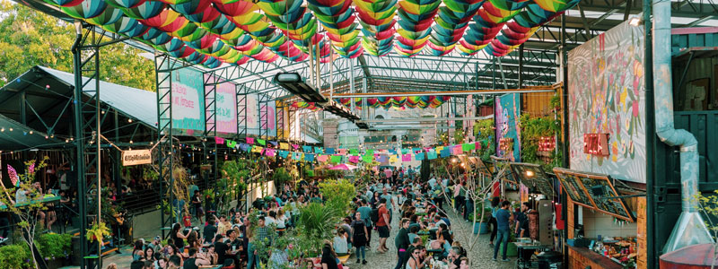

Doónde Comer
En este buscador, vas a poder filtrar por nombre, tipo de establecimiento y por barrio
ver más

En este buscador, vas a poder filtrar por nombre, tipo de establecimiento y por barrio
ver másEn Buenos Aires vas a encontrar platos típicos y comida de todo el mundo
ver más
Conoce los patios y mercados en donde puedes disfrutar de la mejor gatronomía de la ciudad
ver más